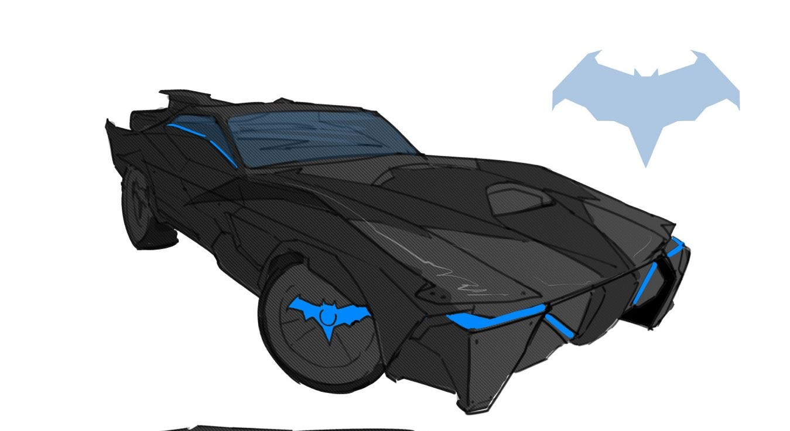
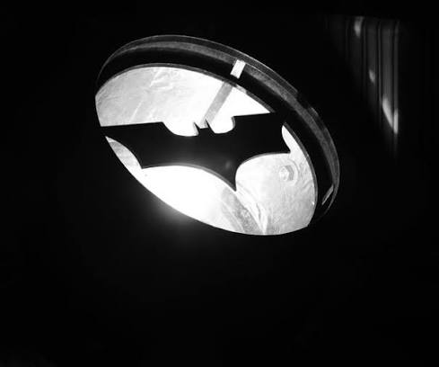

Projects
Explore Batman's technology and equipment. These fictional projects
support his investigations, protection and emergency response
operations.
Featured Projects
The Batcomputer
 View Batcomputer details
View Batcomputer details
An advanced computer system for forensic investigations, data
analysis and criminal intelligence.
Focus:
Data analysis, cybersecurity and investigative technology.
The Batmobile

View Batmobile details
A specialized vehicle designed for mobility, protection and rapid
emergency response.
Focus:
Mechanical engineering, vehicle technology and system integration.
The Batsuit
 View Batsuit details
View Batsuit details
An advanced protective suit combining armor, communication systems
and specialized tactical equipment.
Focus:
Materials engineering, wearable technology and personal
protection.
The Bat-Signal

View Bat-Signal details
A communication system used by the Gotham City Police Department
to request Batman's assistance.
Focus:
Communication, coordination and emergency response.